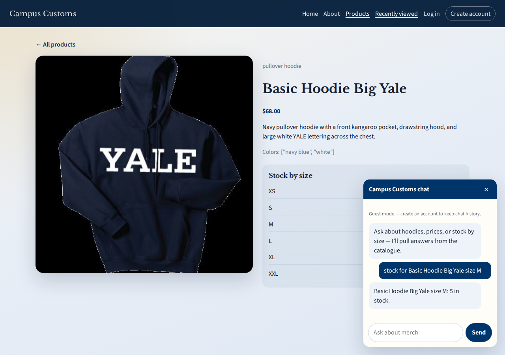
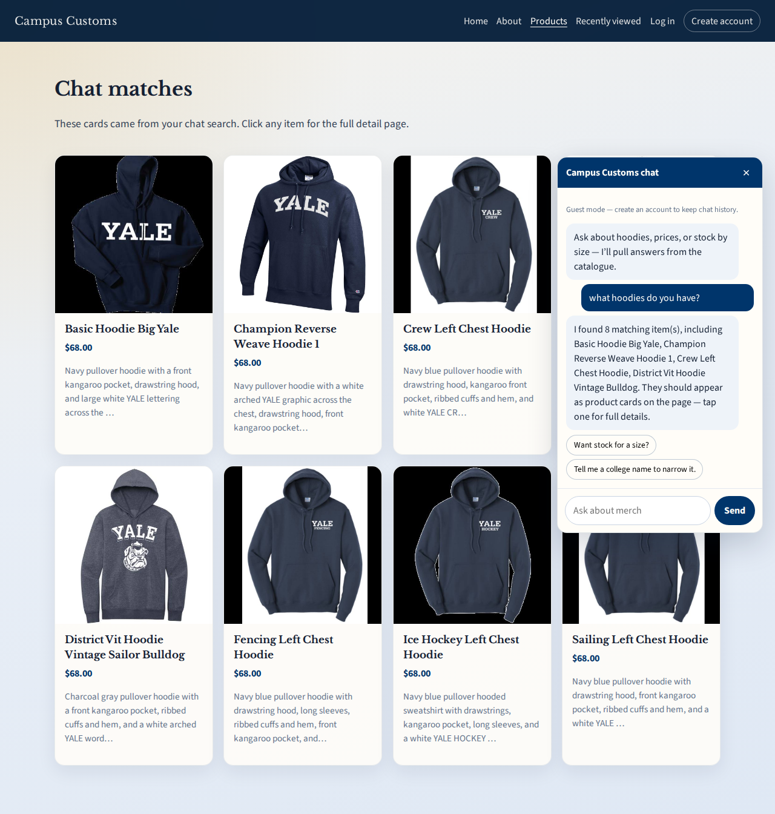
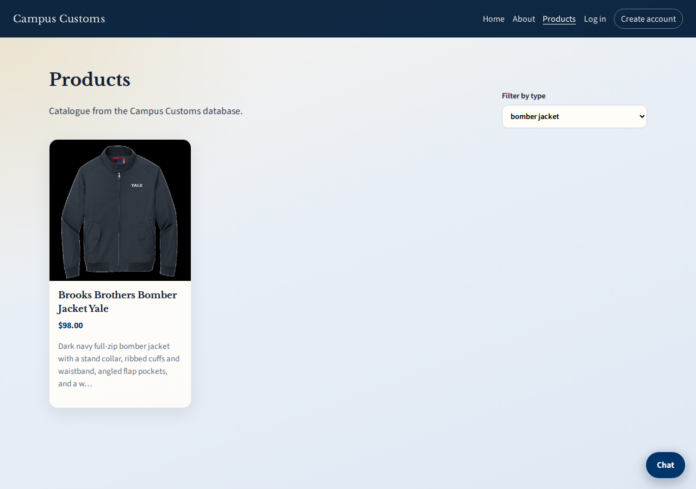

Live checks against the React front end + FastAPI back end using campus_customs.db.

On the Basic Hoodie Big Yale detail page, chat was asked for size M stock. The assistant answered from the inventory table: 5 in stock — not an invented number.

Asking “what hoodies do you have?” returned structured matches and switched the Products view to Chat matches with hoodie cards. Each card still links to the single-item detail page.

The Products page Filter by type control narrows the catalogue (here: bomber jacket)
without using chat — one of the front-end usability improvements in usability.md.